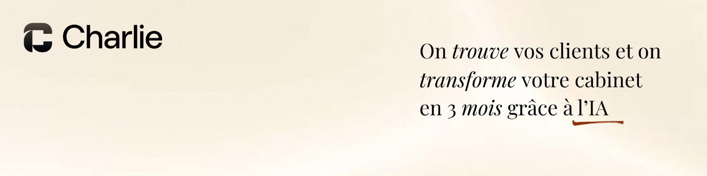

|
ÉDITION №5
|
Charlie
|
LUNDI 8 JUIN 2026
|
|
La newsletter de la semaine
Mettre votre cabinet en conformité RGPD.
Chaque lundi, l'intelligence artificielle appliquée au métier de CGP.
5 min de lecture
|
|

|
« Le RGPD, c'est pour les grands groupes. » C'est faux.
Patrimoine, revenus, situation familiale, pièces d'identité, dossier KYC. Un cabinet de gestion de patrimoine brasse, tous les jours, des données parmi les plus sensibles qui soient.
La taille du cabinet n'y change rien. En 2025, la CNIL a infligé 486,8 M€ d'amendes, près de neuf fois plus qu'en 2024. Ces montants records visent les géants du numérique, pas vous. Mais regardez ce qui sanctionne vraiment les petites structures : les manquements les plus fréquents ne sont pas des fuites spectaculaires, ce sont le défaut de coopération avec la CNIL et le non-respect d'une demande d'accès ou d'effacement. Autrement dit : un client qui réclame ses données, ou un contrôleur qui pose une question — et un cabinet incapable de répondre. Ce jour-là, ne pas avoir de registre, de durées de conservation écrites ni de contrat avec son CRM, ça ne se rattrape pas.
|
Sept principes, et surtout : pouvoir le prouver.
Le règlement repose sur sept principes : licéité, finalité, minimisation, exactitude, conservation limitée, sécurité, responsabilité.
Les six premiers tiennent en une phrase : ne collectez que ce qui sert un objectif précis, gardez-le le temps nécessaire, protégez-le. Le septième, la responsabilité, est le plus exigeant : respecter les règles ne suffit pas, il faut pouvoir le prouver. Vos preuves, concrètement, ce sont votre registre, vos contrats de sous-traitance, votre politique de confidentialité et vos durées de conservation écrites. Côté base légale, un cabinet en combine quatre : le contrat pour la mission de conseil, l'obligation légale pour le KYC et la lutte anti-blanchiment, l'intérêt légitime pour le suivi client, et le consentement pour la prospection.
|
5 ans
données KYC et LCB-FT
|
3 ans
prospect sans réponse
|
10 ans
pièces comptables
|
“Le jour où un client a demandé l'accès à toutes ses données, j'ai sorti mon registre et répondu en vingt minutes. Avant, ça m'aurait pris la semaine.”
Thomas
·
CGP indépendant
|
Se mettre en conformité, dans le bon ordre.
Le gros chantier, si vous voulez être carré une bonne fois pour toutes.
Comptez deux à quatre mois en y allant par étapes, puis une revue une fois par an. Première chose : désigner un référent RGPD en interne (le DPO, lui, n'est pas obligatoire pour un cabinet de votre taille). Ensuite, trois chantiers.
| 01 |
Le registre des traitements. On se croit souvent dispensé sous 250 salariés. C'est faux dès qu'on gère des clients au quotidien. Prenez le modèle gratuit de la CNIL et listez vos traitements : clients, prospects, RH, LCB-FT, prospection. |
| 02 |
Les bases légales et les durées. Pour chaque traitement, fixez trois choses : une base légale, une durée de conservation, une règle de suppression. Et rappelez-vous qu'un client qui demande l'effacement de ses données ne passe pas avant vos obligations de conservation LCB-FT (5 ans) ou comptables (10 ans). |
| 03 |
Les sous-traitants et la sécurité. Votre CRM, votre hébergeur, vos outils IA sont tous des sous-traitants : il vous faut un contrat conforme à l'article 28, et tout transfert de données hors Union européenne doit être encadré. Pour la sécurité, le minimum : double authentification partout, mots de passe d'au moins 12 caractères, chiffrement, et de quoi signaler une fuite à la CNIL sous 72 heures. |
|
Deux heures ce matin : posez votre charte IA.
Le petit chantier que vous pouvez boucler avant midi, sur l'IA que vous utilisez déjà.
| 01 |
Listez les outils IA déjà utilisés dans le cabinet : ChatGPT, Claude, copilotes intégrés à vos logiciels. |
| 02 |
Écrivez une règle simple, noir sur blanc : aucune donnée nominative de client dans un outil IA grand public. Les données de vos clients relèvent du secret professionnel — elles n'ont rien à faire dans un outil dont les requêtes peuvent servir à entraîner le modèle. |
| 03 |
Avant chaque requête, prenez le réflexe d'anonymiser : remplacez les noms, les montants exacts et les numéros de contrat par des variables comme [CLIENT], [MONTANT], [CONTRAT]. |
| 04 |
Pour vos usages réguliers, passez à une offre entreprise : non-réutilisation de vos données, contrat de sous-traitance et hébergement maîtrisé. |
|
| |
|
|
Outil de la semaine
Le registre CNILcnil.fr
Le modèle officiel de registre des traitements, gratuit et prêt à remplir. Des tableurs déjà structurés qui couvrent l'essentiel. Le moyen le plus simple de commencer.
|
|
|
Télécharger le modèle de registre→
|
| |
|
Charlie
L’ÉQUIPE CHARLIE
|